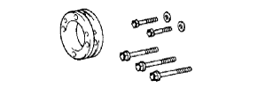
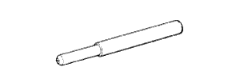
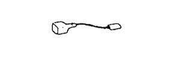
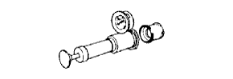
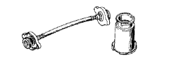
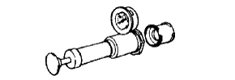
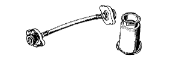
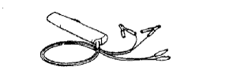
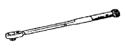

Partial engine ASSY (1NZ-FE (4WD)) Preparation [Installation]
|  | 09213-58013 | Crank shaft pulley Holding tool |
| (91111-50845) | bolt | |
| 09224-00010 | O2 sensor wrench | |
 | 09330-00021 | Companion flange Holding tool |
|  | 09670-00010 | Front cross member- Guide |
|  | 09843-18030 | Tako Pal Spick Up Wires No.2 |
 | 09843-18040 | Diagnowship check wire No.2 |
 | 09991-70200 | TASCAN set |
| Torque wrench | ||
| Noogis (0-200mm) | ||
| Turnover | ||
| Direct regulations, push pull gauge | ||
| 95506-00090 | Belt tension gauge (Denso part number) 95506-00090 Treated as Denso Co., Ltd. | |
|  | RCT-2A | Radie-Ta-Cap Testa- Treated as Banzai Co., Ltd. |
|  | RCT-2A-30s | Radie-Ta-Cap Testa- Adapter set A Treated as Banzai Co., Ltd. |
|  | RCT-2 | Radiator cap tester Treatment of Iyasaka Co., Ltd. |
|  | RCT-2-Ast | Radiator cap Tester adapter set A Treatment of Iyasaka Co., Ltd. |
|  | TL-12C | Timing light (Current detection type) Treatment of Iyasaka Co., Ltd. |
|  | QL-100N | QL Torque wrench (100N) Banzai Co., Ltd. |
| QL-200N | QL Torque wrench (200N) Banzai Co., Ltd. | |
| QL-25n | QL Torque wrench (25n) Banzai Co., Ltd. | |
| QL-50N | QL Torque wrench (50N) Banzai Co., Ltd. | |
| EL-400H | Engine lifter Treated as Banzai Co., Ltd. | |
| EL-400 | Engine lifter Treatment of Iyasaka Co., Ltd. |
| Toyota genuine auto fluid Type T-IV | ||
| Toyota genuine Super Long Life Coolant | ||
| Toyota genuine engine oil | ||
| Fragment | ||
| Adherive 1324 V93500114 Treated as a takty Co., Ltd. |